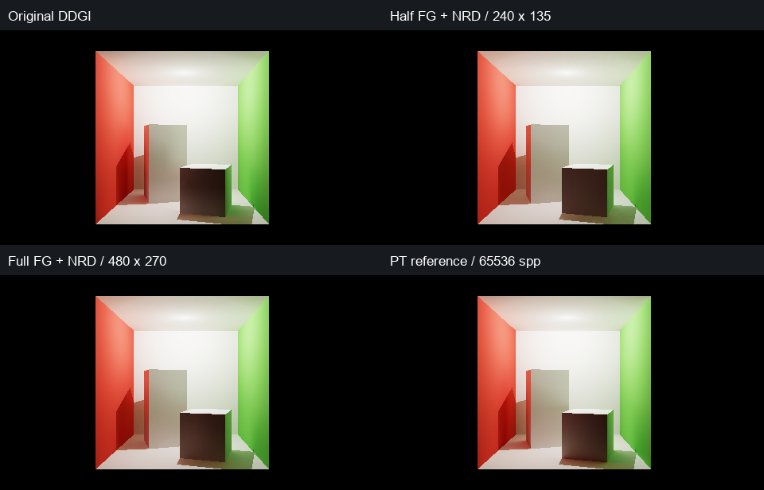
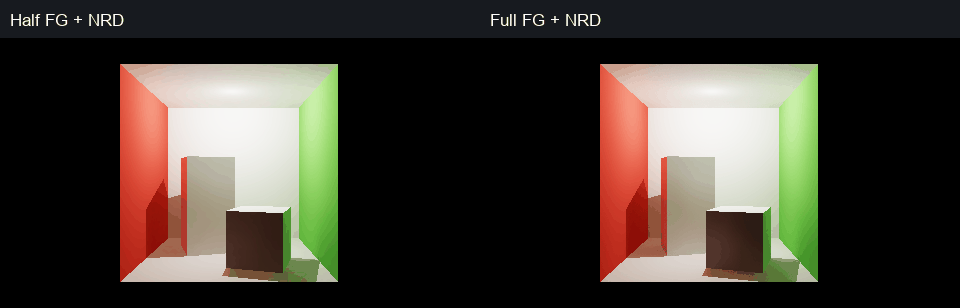

全分辨率的 MSE 和 HDR-FLIP 均优于半分辨率。且两项指标均优于原始 DDGI。相对半分辨率，全分辨率 MSE 变化 -58.2%，HDR-FLIP 变化 -24.5%。

| 方案 | MSE ↓ | HDR-FLIP ↓ | 时间方差 ↓ | GPU 帧耗时 ms ↓ |
|---|---|---|---|---|
| 原始 DDGI | 1.168769e-05 | 0.12039 | 2.381736e-08 | 0.2650 |
| 半分辨率 FG + NRD | 1.900586e-05 | 0.12600 | 3.251584e-07 | 0.3869 |
| 全分辨率 FG + NRD | 7.935121e-06 | 0.09514 | 5.20988e-07 | 0.4702 |
沿用同一 Lambert Cornell、当前 Test Harness 点光源衰减、相机、480×270 输出和未经降噪的 65536 spp PT reference。原始 DDGI / 半分辨率的结果直接沿用上一组，没有改变评分范围或 HDR-FLIP 曝光参数。全分辨率仍是每像素每帧 1 根漫反射 FG 射线；NRD 使用相同 RELAX 参数。无 Accumulate、无 DLSS；全分辨率不经过半分辨率重建。
Probe 2048 帧预热，然后 NRD 重置并预热 512 帧，连续采集 64 帧逐帧评分。Probe 持续更新。全分辨率连续样本前后各 32 帧平均亮度变化 0.033%。MSE 为线性 HDR 完整光照，时间方差为固定可见表面像素的 RGB 总体方差均值。相同参考的残余噪声估计 MSE 为 2.209029e-08。

RTX 5070 / D3D12。GPU 帧耗时包含 GBuffer、probe 更新、FG、NRD、合成、色调映射，不含 CPU 和文件保存；每种 255 个时间戳区间。全分辨率分项：DDGI 0.3058 ms，NRD 0.1340 ms，合成 0.0052 ms。不同方案来自各自实测运行，存在运行间频率波动。
这项实验隔离的是“采样/降噪分辨率及其重建”的整体影响。相同 NRD 像素半径在半分辨率下覆盖更大的屏幕区域，因此不等同于只改变射线数。FG 能把第一段可见性追踪得更准确，但后续仍由 DDGI 近似，且单帧采样噪声与 NRD 滤波偏差可能抵消收益；不能保证最终整体指标必然改善。要单独判断积分器误差，需要另做当前灯光下的未降噪 FG 收敛实验。
build\windows-vs2022\bin\Release\Mogwai.exe --device-type d3d12 --headless --deferred --script tests/ddgi/full_gather_nrd_comparison.py --width 480 --height 270 --logfile build/full-gather-nrd-comparison.log python tests/ddgi/score_full_gather_nrd_comparison.py